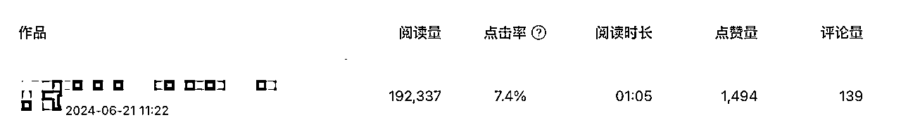
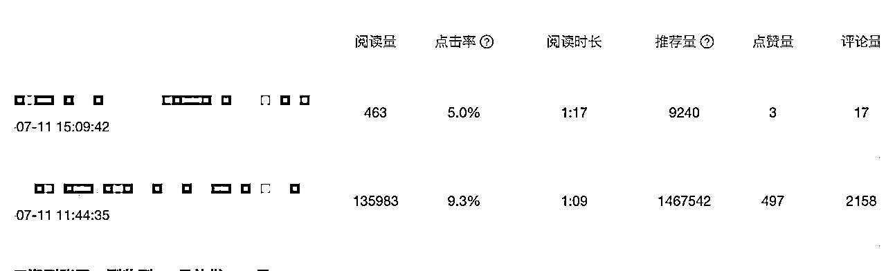
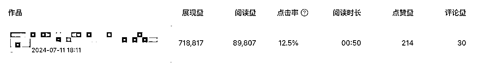
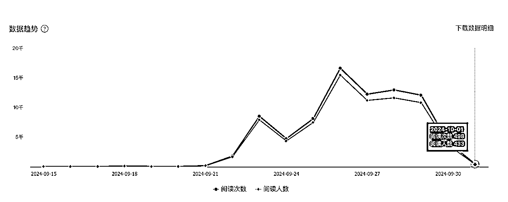
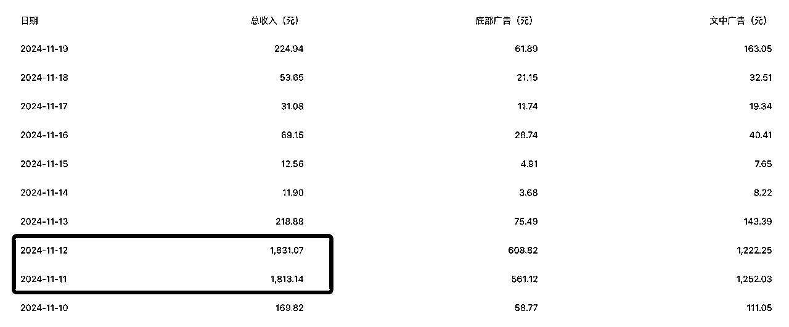

来源：https://c4zhxg7s68.feishu.cn/docx/OkeWdyFMZokQ7sxkunCch3aZn3g
大家好，我是MOON。22年4月加入生财，因为是对赚钱比较迟钝的人，在副业上一直比较划水，看得多做得少。第一次接触公众号写作是在6月份航海，没想到一直坚持到了现在。
从一开始凭运气拿到10w+（阅读），到逐渐迷茫、自我怀疑，再到静下心来从头开始，目前在这个项目上零零总总累计变现1w，也算达成了之前给自己定的小目标。与各位圈友比起来，这个成绩实在没啥亮点，但对我自己来说，这是第一次在工作之外赚到钱，是一个非常大的突破。因此，我想做个复盘，为这段时间的经历做个总结。
关于这个项目具体的操作，航海手册里已经有了非常详细实操的指南。我更多偏向这段时间的经历回顾，在迷茫挫败时如何坚持下去。
6月，跟着航海开始做公众号爆文写作。当时我只有1个号，主要写热点观点类文章，利用AI生成内容，我再稍微润色后发布。同时，我也会把文章同步到其他平台，比如百家号、头条号等。
在公众号上，文章的阅读量最高不过几百，但出乎意料的是，文章在其他平台的阅读量表现不错，常常有几千、几万的阅读，有些文章甚至达到了一二十万的阅读。这让我非常惊讶：一个新人➕一个新号➕AI生成文章，竟然可以获得这么多的阅读量。



尽管这些平台的收益不如公众号，但这个阅读数据给了我莫名的自信，甚至对这个项目产生不切实际的幻想：再努努力、保持更新，每个月多搞几篇10w+，甚至以后全职就做这个了。
一顿操作猛如虎，一看收益两块五。很快，新手保护期结束了。那段时间，我投入了更多精力，注册了更多账号，提示词越来越好，AI生成的内容也越来越满意，但是公众号的阅读量一直没有起色，最多的一篇阅读2w+，再也没有出现过一篇10w+。
看到群里的圈友们讨论“最近流量很好、收益高，要抓住这段时间”，我变得非常焦虑，看到谁爆了，就去追哪个赛道，热点、生肖、律例、故事、汽车、情感、养老、美食……几乎所有赛道我都尝试过，最多的时候同时更4个赛道。
对于有经验的玩家，这样的操作当然没有问题，能够最大化地吃到平台的流量。但是对于我这个新手来说，完全就是灾难。本身没有选题和素材的积累，赛道理解不到位，再加上同时操作多个账号，整个人变得非常疲惫。
每天做的就在低粉爆文中找素材，复制粘贴给AI，完全没有时间去真正思考。多赛道操作导致我在每个赛道上的理解都非常浅表，选题也常常抓不住重点。越做越疲惫，焦虑感越来越重。
那段时间非常挫败，每天都在自我怀疑。为什么别人能爆，我却做不出成绩？看到圈友在群里晒日入几百几千的收益，内心更加焦虑。
但我从未怀疑过这个项目本身的可行性。毕竟，我看到航海群、猫哥教练群和一来教练群里的圈友都在不断晒出收益，打鸡血。大家都在赚钱，那么一定是我做得不够好。
为了缓解焦虑，我开始跑步，跑步给了我短暂的心理放松。静下心来后，我给自己定了一个目标：即使最终放弃这个项目，我也要先拿到1w的收益。如果完成这个目标后还是做不下去，那就不做了。
我分别找了一来教练和猫哥请教，确认我的内容没有太大问题，主要问题出在选题和标题的把控上存在不足。于是，我决定先专注在1-2个赛道上，深耕一段时间，即使看到别的赛道在挣钱也不要眼馋。等自己真正踏实做一段时间后，有了手感之后再考虑别的。
最终我选了养老金和养生美食这两赛道，原因是这两赛道的单价相对较高，而且当时写“十大美食”比较容易起，很多账号都用这个方法入池了。养老金虽然起号难度大，但一旦入池，收益非常可观。
选定赛道之后，我开始对对标账号重新做了一轮精选，逐篇翻他们的文章。从选题、标题到文章结构，逐层拆解，并不断调整自己的选题和提示词。
9月航海的时候，我靠写“十大美食”榜单类文章顺利入池。但是因为经验不足，没有抓住机会及时转到养生美食上，反而继续写“十大美食”。随着写十大的人越来越多，再加上遇到国庆回家偷了几天懒，最终那个账号很快掉池了。

不过，养老金赛道给了我意外之喜。因为起号难，我原本没有太大期待，主要精力还是放在美食上。后面美食账号陆续也有进池的，但是整体没有大爆，基本是几千、几万阅读。
那天听了一来教练一场直播，提到最近写十大美食的同质比较严重，有些账号转军事类就爆了。我当时手上正好有个掉池的美食账号，是朋友帮忙注册的，掉池后本来想找他注销重启，但是因为他扫码不方便就一直放在那。于是，就干脆转了养老金。（没有写军事类律例类主要还是考虑风险，以及自己之前没写过，坚持不再新开赛道的原则）
没想到一转就爆了，发了三篇之后直接入池，两天时间将近4000块。加上之前零零总总的收益，我最终完成了在这个项目上收益1w的小目标。

如果你不相信自己在做的事情是可行的，那你根本坚持不了多久。很感谢生财航海，让我遇到非常多优秀的教练和圈友，无私分享自己的经验，解答小白问出的很傻的问题。在其他地方，很少有人会这么包容一个新手。
看到他们晒收益打鸡血，也让我相信这个项目依旧值得坚持。不然按照我之前的习惯，做了一个月最多两个月一定会认为这个项目已经过了红利期或者没有新手小白的空间了，转而去看其他项目，然后循环往复、一无所获。
这个项目具体实操的方法，航海手册中已经事无巨细的写清楚了。坚持做，一定会有机会。可能很久都不挣钱，但是一旦账号入池了，完成目标也就一两天的事。
自己没有阅读，别人月入几万，甚至日入一两万，真的很容易焦虑。航海群里的话“全是运气，没有技术”。但真正赚钱的人，无一不是之前有过积累的人，哪怕不是在流量主这个项目上。
在任何项目中，焦虑几乎是每个新手都会遇到的问题，这是正常的心理反应，但要学会如何调整自己的心态。以下是我在这个过程中学到的几条经验：
之前我在内容上花了太多精力，要么一遍遍手动润色，要么一遍遍修改提示词，最终内容自己比较满意，但是因为标题非常平庸，根本没有人点击，平台是不会继续给你推荐的。
做公众号流量主，一定要搞清楚自己的目的，以终为始地去倒推自己的行动。最好的方法就是模仿对标的爆款标题，或者直接拿来用。
这个不仅适用于对标账号，更适用于自己的账号。每个账号都有自己的流量特(xuan)性(xue)，也就是某些选题或标题突然表现特别好。这时候，一定要抓住这个异常值，反复利用。继续挖掘这个选题关键词，甚至对原来爆过的内容进行重写，尽可能把该吃到的流量吃到。
因为有了AI之后，几乎所有赛道内容都可以写。刚开始做很容易被别人影响，教育热就追教育，律例火就写律例。导致要么同时写好多赛道，要么这个赛道写几天就换下一个，人很累又没有效果。
不如专注一两个赛道，深耕下去。这个过程中，遇到的问题一个个解决，真正的熟练有了手感之后，后面再复用到其他赛道就很快。
如果你已经入门了，想要在这个项目上放大收益，那还是得多做一些账号。多账号可以帮你分散风险，提升收益的稳定性。
可以通过与他人合作，自己提供内容让别人来发。这样可以突破账号和IP的限制，而且往往能够有意外惊喜。兔子鱼教练有句名言“永远相信别人的运气比自己好”。
一直以来，我是对赚钱非常迟钝的人，而且眼高手低，没有什么收获。对于很多圈友来说，半年时间1w收益属于做的很差了。但是对我个人来说，最大的收获不是这些收益，而是这个过程中自己的坚持和突破。人生就像爬山，不是要到最高，而是要找到属于自己的节奏，然后一步一步往上走。
最后，特别感谢生财航海，让我有机会接触到这个项目，跟真正拿到结果的人一起实操；感谢兔子鱼教练，是我这个项目上的领路人，没有她我可能在航海结束后就不会继续了；感谢猫哥教练和一来教练，给了我很多具体而有针对性的指导，让我少走了非常多的弯路。也非常感谢@澄歌的鼓励和支持，愿我们都能在这个项目中找到属于自己的突破口。